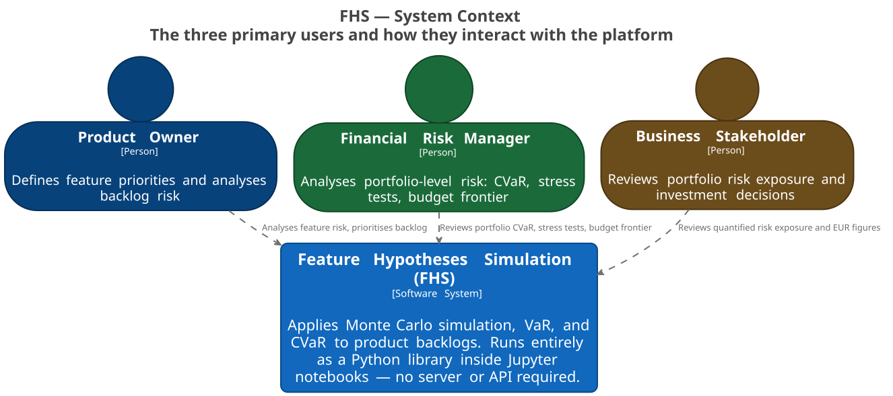

1. Business Case
Product teams make backlog decisions under uncertainty (users, conversion, business value, and development cost). Poor prioritization wastes capacity and budget.
FHS applies Monte Carlo simulation plus VaR/CVaR to feature portfolios so Product Owners, Portfolio Owners, and Agile leaders can quantify downside in EUR before funding decisions. Risk Managers use the same outputs for review and governance.
2. Functional Overview
-
Local-first Python package with Jupyter notebooks and planning CLI.
-
No REST API, no database, no server-side platform.
-
Main flow: scenario input → simulation → risk metrics → budget recommendation.
-
Core modules:
core/services/simulation,core/services/risk,core/services/portfolio,core/services/application,application/scenario_service.
fhs plan --features backlog.yaml --budget 150000 --output report.md3. Quality Goals
-
Correctness: VaR 95% within +/-1% for fixed seeds.
-
Simplicity: first assessment in <15 minutes without coaching.
-
Transparency: all key metrics shown in EUR with plain-language explanation.
-
Decision support: output directly supports build/skip, priority, and budget-fit decisions.
-
Accessibility: all chart colours reference semantic palette tokens (WCAG 2.1 AA, ≥ 4.5:1 contrast); no hardcoded hex literals in presentation code.
4. Architecture Hypotheses
-
H1: KISS over infrastructure — local library + CLI minimize deployment/ops complexity.
-
H2: Notebooks are first-class presentation components; DDD layering keeps business logic separated.
-
H3: Correlation-aware portfolio analysis improves realism over naive diversification assumptions.
-
H4: Exact combinatorial selection (fixed feature count) plus greedy budget/sprint optimization keeps runtime practical.
5. Business Context
-
Product Owner: defines features and compares expected business value, business value floor, and delivery confidence.
-
Portfolio Owner / Agile leader: uses the portfolio view for roadmap trade-offs, budget fit, and sequencing.
-
Risk Manager: evaluates CVaR, correlation, stress scenarios, and portfolio trade-offs.
-
Business Stakeholder: consumes notebook and CLI reports for investment decisions.

Communication Canvas: HTML | draw.io source
Inception Canvas (draw.io): Architecture Inception Canvas source
System boundary: simulation and advisory engine for product backlogs.
Out of scope: financial trading, real-time market feeds, multi-tenant SaaS, API gateway, persistent database backend.
6. Technical Challenges and Risks
-
Sampling bias: high uncertainty can distort normal sampling; mitigation via lognormal/bounded alternatives.
-
Weak correlation data: teams often lack historical data; mitigation via explicit correlation source and manual matrices.
-
Optimization scaling: combinatorial search does not scale linearly; mitigation via exact mode for small sets and greedy optimization for budget/capacity constraints.
-
Input quality risk: weak assumptions can mislead; mitigation via validation, confidence intervals, and scenario communication.
-
Statistical stability: enforce minimum scenario counts (1,000 minimum, 10,000 default).
7. Organisational Constraints
-
Usable by Product Owners, Portfolio Owners, Agile leaders, and Risk Managers without formal finance training.
-
Must fit into sprint/release planning sessions.
-
Documentation language: US English.
-
License: MIT License - Copyright © 2026 Stefan Zils.
8. Technical Constraints
-
Python baseline: 3.14+
-
Required stack: NumPy, SciPy, Pandas, Matplotlib, Plotly.
-
Primary interfaces: Jupyter notebooks and
fhs planCLI. -
Linux/macOS workflows with Docker quick-start profile.
-
Notebook code cells must be source-hidden (
source_hidden: truemetadata) — target audience is Product Owners, Portfolio Owners, Agile leaders, and Risk Managers, not engineers. -
Pydantic models enforce input validation at all domain boundaries.
arc42 template: Architecture Inception Canvas.
FHS canvas source: draw.io.
Related FHS canvas: Architecture Communication Canvas | draw.io.
Full documentation: Arc42 Architecture Documentation.